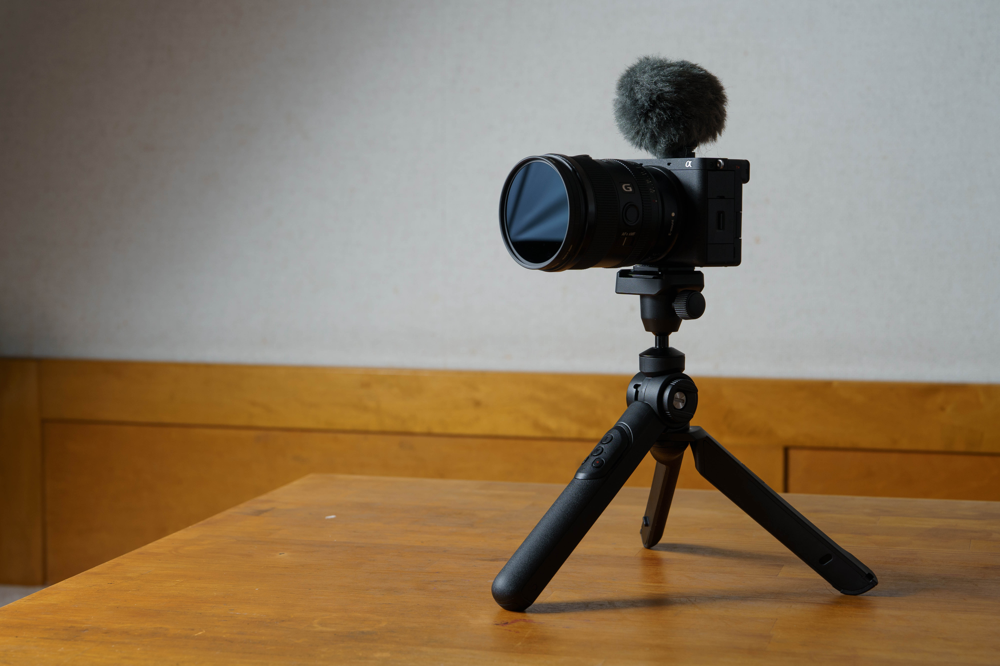

カメラなんてなんでもいい わけないだろ。
2024/09/24
ずっと避けてた話題ですが、
「写真は何で撮ったかは関係ない」って話、本当にそうなんか？と思う。なんとな～くだけど写真好きの人に機材の話すると煙たがられる印象が前からあって、自分としては極力カメラの話は避けるようにしてました。
ですがこのタイミング、カメラもレンズも一旦もういらないかなっていう今に、持ってる機材の話をしようと思います。一応断っておきますがここからは写真の話皆無です、あくまでもカメラを写真を撮るためのプロダクトとして紹介するので写真とかへのこだわりを期待した人は見ないでいいと思います。（自己満足＆ブログ更新への焦りで書いてます）
まずはこれから
aps-cっていうセンサーが小さい（比フルサイズ）カメラです。割と軽くて液晶は羽みたいに開いたりできるバリアアングルタイプです。
aps-cは良くない、みたいな印象持ってる人がいると思うんですけど...まぁフルサイズには勝てないのはそう。このカメラもベースiso（知らない人はスルーしてね）を超えるとすぐにノイズが出たり絵が崩れるので、ちゃんとセンサーのこと考えながら撮らないといけないです。逆に言えばセンサーの調子を理解していれば良い絵は出てくるみたいな。
ハード的な話で言うと、変形する羽みたいな液晶は苦手ですね。自分が心配性なので製品を使うときもできるだけ壊れないように注意して使おうとしちゃうので、こういう折れそうなヒンジとか見ると神経がすり減らされるんすよね。あなたは注意すればいいことでしょ？とかそうじゃないんすよ、気楽に使えることもプロダクトとしては大事やと思ってます。
他で言えば20mmのレンズとの見た目のマッチがすんごい好きなんですよね～。某カフェで「たたずまいが素敵なカメラですね」って言われてからマジでこのセットが余計に気に入ることになりましたね。（むしろこの話がきっかけでこのブログ作ったまである）ぶっちゃけこれも大事だと思う、そのカメラとレンズの組み合わせが素敵とかその機械を愛せるかって。そんでもって出てくる絵も好きだったらもう幸せじゃんか。ちなみにこれだと写真は30mm、動画は35mmくらいなのでちょーどいいです、好き。
とは言ったけど写真で30mmはまだ慣れてないかな笑。比率変えとかクロップで対応してるけどまだ自分の意識として動画機感はある。
あと持ってるレンズ
左から20mm、35mm、65mmのレンズです。全部フィルター径が67mmなので動画に使いやすい組み合わせ（な気がする）。レンズはあんまり語ることないかな...強いて言うなら絞りリングが無いレンズは買うつもりないってくらいかな。UIとして絞りリングがレンズにあること、リングでF値が見れることはマストだと思ってます。
ちなみにオススメレンズ聞かれたら65mmって答えます。理由は視野とパースが変わらない、全部使ったことあるからオススメできる、あとそんなくだらない質問した人を困らせたいってのが主な理由です。個人的にはこの質問は愚門だと思います、だって何撮るかとか何を重視するかで違うのに変なこと聞かないで欲しい！と内心では思いながらちゃんと答えてはいます
残りのカメラとレンズ
10年前のフルサイズカメラと24mm-70mmのズームレンズです。これ～はあんまり説明することないですね、適当な写真でも載せておきます
カメラに関しては名機ですね、重い絵が得意なんかな？って気がする。レンズは重さもズームトルク調整機能もその他もろもろのUIがどの選択肢よりも良かったので買いました、そう写りじゃなくて製品、使いやすいガラス筒として。
とりあえずこんな感じ。
こういう調子の話は好きですが常にカメラだレンズだ言うのは好きじゃないのでね、ここら辺にさせてもらいますが。あ、ちなみに聞いてくる分には全然答えるので◎気になることは聞いてもろたらいいですよ。
最後に他の機材の話もしておきます。ふっるいパナソニックのコンデジも持ってます、あれはあれで違う絵が撮れるので使ってますね、こないだのMVもどきも部分的にコレで撮りました。サムネのミニ三脚とマイク、勢いで買った割にはいい仕事してるのでこれも一応機材として載せておきました。まぁね！カメラなんてなんぼでもあっていいもんでもないですからね！好きなものを好きに使えばええと！そう思ってます。